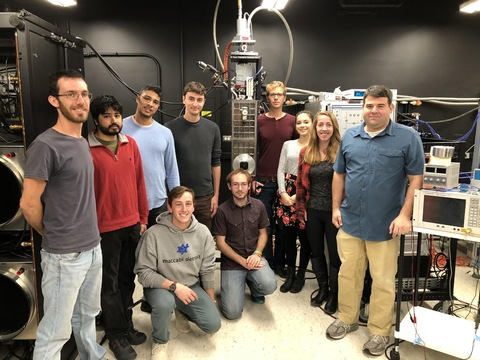

Image produced by MEC. The central star is blocked by the coronagraph. The four bright speckles are the astrogrid used for photometric and astrometric calibration. A faint companion is visible on the right part of the image (2-oclock). The scan in wavelength is possible thanks to the energy discrimination properties of the MKIDS technology, without any diffractive optics.
MEC, the MKID Exoplanet Camera, is an ultra-fast energy-resolving camera designed for high contrast imaging in the near-infrared band. It was developed in collaboration with Ben Mazin and Alex Walter among others at the University of California, Santa Barbara. With 20,160 pixels, MEC has the largest superconducting detector array in the world and can distinguish the colors of individual photons at microsecond resolutions. MEC arrived on Mauna Kea, HI in March 2018 and it is now available for Open-Use observers.
MEC uses an emerging superconducting detector technology called Microwave Kinetic Inductance Detectors (MKID) and operates at a temperature of 90 milliKelvin. Unlike conventional semi-conductor technology, MKIDs generate tens of thousands of free electrons when a photon breaks Cooper pairs in the superconducting circuit. This sensitivity is what allows the energy-resolved and noise-free detection of photon events. The custom readout electronics provide a continuous stream of photon arrival times to a computer essentially providing frames of arbitrarily short exposure time on demand.
MEC's purpose is to find and characterize directly imaged exoplanets in J,y,z band. In post-processing, the energy resolution R~8 allows for spectral differential imaging (SDI) and the extraordinary speed allows stochastic speckle discrimination (SSD), a promising speckle removal technique using the photon arrival time statistics to distinguish between speckles and companions. Most importantly, the fast noise-free continuous readout of the MKIDs allows for focal plane speckle control at rates high enough to track speckles with ~1s lifetimes, removing the current dominant noise-source in direct imaging experiments.
|
|
20kpix MKID array, the largest superconducting detector in the world, used in the MEC instrument. |
|---|
The performance is fully characterized in recent MEC instrument paper: Walter et al., PASP, 2020. The current instrument capabilties are summarized below:
| Basic Parameters | ||
|---|---|---|
| Field of view | 1.5''x1.5'' | |
| Plate Scale | 10.4 mas/pixel | |
| Detector | MKIDS 144x146 pixels | |
| Wavelength coverage | y-band | CHARIS can be used simultaneously in any mode. |
| y- and J-band | CHARIS can be used simultaneously in any mode, with some limitations for J-band. | |
| Timing resolution | 1-2 us | |
| Readout speed | 2-2000 kHz | Faster with higher flux. |
| SCExAO throughput to MEC | 70% | ~3.5% from atmosphere to detector. |
| Spectral resolution | R~5 | |
| Dithering | ±0.5'' | Dithering is used to recover the image even with dead pixels. |
| Processing | Stochastic Speckle Discrimination (SSD) | Better than ADI/SDI/RDI at small IWA. See Walter et al., PASP, 2019 |
Total throughput of the instrument from atmosphere to the detector, over the wavelength range.
Typical spectral resolution distribution for various wavelengths. The spectral resolution increase with lower wavelengths.
The SSD pipeline increase the SNR of detection by a factor ~3 for separations below 0.5'', compared to the total intensity image.
A contrast curve was obtained from a 15-minute dataset extrapolated to a typical observation time of 1 hour, to show the efficacy of the SSD technique for a long observation time. The final contrast is dependent on the speckle field intensity, and this example was obtained during excellent 0.35" natural seeing condition at H-band (diffraction-limited, SR ~>80% in H band after correction).

MEC SSD contrast curve for a 1-hour observation.
|  | The UCSB team with MEC before shipping to Hawaii. |
|---|
The MKIDS camera is being developed in collaboration with a team from the University of California, Santa Barbara. It is led by Ben Mazin and includes Seth Meeker, Matt Strader, Julian van Eyken and others at UCSB, Rebecca Jensen-Clem at Caltech, and Bruce Bumble at JPL.
The MKIDS acronym stands for Microwave Kinetic Inductance Detectors which are an emerging superconducting detector technology capable of noise-free single-photon-counting and low-resolution spectrophotometry across UV, optical, and near-IR wavelengths simultaneously. MKIDs have great potential as integral field units for high-contrast imaging experiments because they are capable of generating noise-free data cubes with arbitrarily short exposures. This allows speckle-reduction post-processing by Chromatic Differential Imaging and by the Dark Speckle technique, a promising speckle removal technique that has previously been limited by the absence of a suitable detector technology. Most importantly, the fast and continuous readout of MKIDs allows for focal plane speckle control at rates high enough to track speckles with ~1s lifetimes, removing the current dominant noise-source in direct imaging experiments.
The first UVOIR MKID camera, the ARray Camera for Optical to Near-infrared Spectrophotometry (ARCONS), saw first light at Palomar Observatory in 2011 and has since demonstrated the first science results from any MKID camera. The MKID camera for SCExAO will feature an upgraded detector array, with 5x as many pixels as ARCONS, optimized for a target bandwidth of 0.7-1.4 microns, and an overhauled readout system integrated directly with the wavefront control for extremely fast focal-plane feedback.

(Left) The UCSB team with ARCONS at the Palomar 200" telescope. (Right) A prototype of the 10,000 pixel MKID array that will serve as this camera's focal plane.
The following publications offer insightful information about this module:
{kind=link}